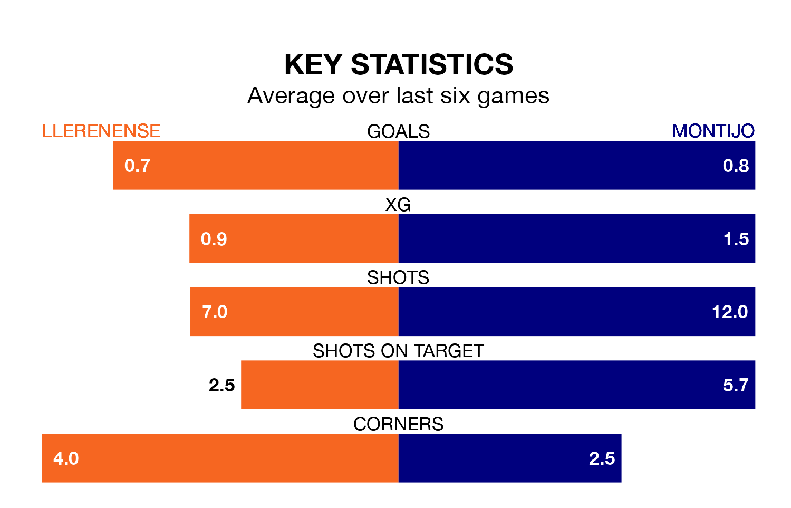

Montijo come to play Llerenense on early Sunday in terrible form, having collected just one point from their last six games.
The visitors have drawn just one of their last six fixtures, while Llerenense have two wins and two draws.
Montijo are bottom of the table after 32 games, of which they have won six and drawn five, earning 23 points.
Llerenense are four places ahead of the away side in 14th, with 10 wins and eight draws putting them on 38 points.
With 25 goals in 32 games so far this season, the hosts are the league's second-lowest scorers with 0.8 goals per game. But they are conceding fewer than average too, letting in 32 goals at a rate of 1.0 per game.
Montijo are also below average scorers, with 0.8 goals per game, compared to a league average of 1.1. They have conceded 1.7 goals per game.
Llerenense's last match was on Sunday, a 1-0 loss against Gimnástica Segoviana CF.
Montijo lost 2-1 against CD Badajoz last time out, also on Sunday.
Updated: 07:59 (UTC), 26/04/24